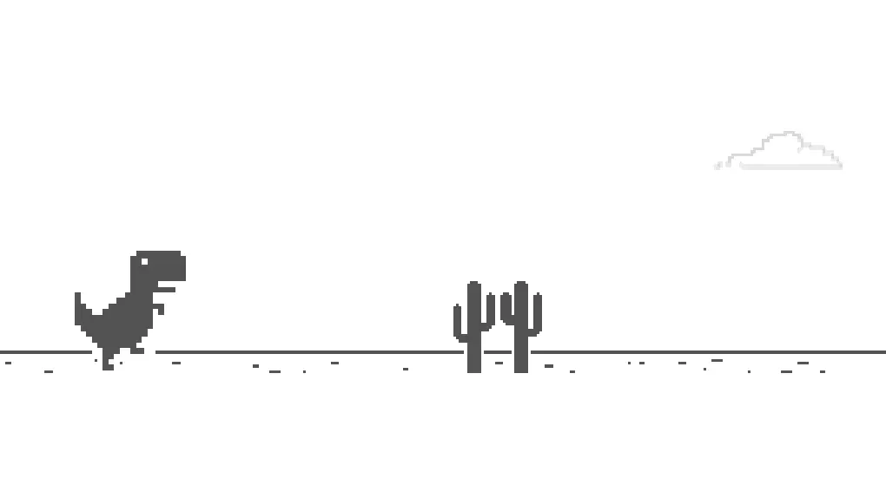

Search on Google Lens
サイト上の画像をGoogle Lensで簡単に検索できるようになります！
使ってみる

MaterialFox-Plus
MaterialFoxのたくさんのバグを修正したものです！
使ってみる

Vertical Tabs
シンプルでパワフルな垂直タブバー
Proton UIにインスパイアされた垂直タブアドオン！
使ってみる

Dino Game
Chromeでお馴染みのDinoゲームを一般的なブラウザーでプレイ可能です！
使ってみる

Vivaldia
Vivaldiでお馴染みのVivaldiaを一般的なブラウザーでプレイ可能です！
使ってみる